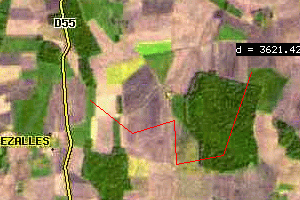

| Topic | Kaboum applet API |
| Authors | Jérôme Gasperi aka jrom, Nicolas Ribot, Gretti N'guessan |
| Latest modification | June 2009 |
| History |
|
Kaboum is a Java 1.1 applet. It works with web browsers that conform to Java
1.1 and Javascript specifications (including LiveConnect).
The following browser are currently supported :
Other browsers should work but are untested.
The aim of this applet is to display thematics maps through the web browser.
Maps are GIF, JPEG or PNG imaged computed on the webserver using the Open source cgi-bin
tool mapserver (from the Minnesota
University).
Kaboum Applet can also display and edit vector objects by plugin it to the KaboumServer servlet. Points, mulitpoints, linestrings, multilinestrings, polygons, multipolygons can be created, edited, and deleted within Kaboum.
Some simple edition tools are also available (union, intersection, difference, symmetric difference, hole completion, completion, erasing, etc.)
Applet contains a single window in which are displayed the maps.
A toolbar outside the applet allows user to switch the operating modes of the applet (cf. Figure 1). An operating mode indicates how the applet should react as user actions. For example, assume that a user do a single mouse clic on the center of the map. If the applet is in ZOOMIN operating mode, then applet will perform a zoom x2 center on the point clicked. If applet is in ZOOMOUT operating mode, then applet will perform a zoom x0.5 center on the point clicked.
Operating modes are described later in this document.
N.B.: at a time, applet can be in one and only one operating mode.
Switching between operating mode is done using the Kaboum public method kaboumCommand(String command).
On return, applet sends message to the web browser by calling the javascript method
kaboumResult(String result).
N.B. : this communication process works only if LiveConnect is enabled.
Kaboum applet is delivered as a jar file This file contains about 30 classes. Tree structure is shown on Figure 2.
Most of the operating modes are independants each other. For example, "geometries" classes are not necessary for navigation modes. For a very simple navigation application you can create your own jar file including the usefull classes. In this case, you would have a smaller size file to load within you application.
Four king of classes are keyed to four directories :
Root directory contains the four base classes :
The first 3 classes MUST ALWAYS BE PRESENT in the jar file.
Kaboumette class is a small applet that show the position of the
current view within the main view.
This class is only necessary if KABOUM_REFERENCE_MAP_IS_APPLET
parameter is set to TRUE.
Each operating mode classes that are presents in the root directory are automatically recognize by the application. They are defined by a unique keyword (see here for more details).
Operating modes classes inherit from the KaboumOpMode class.
This directory contains the KaboumAlgorithms class used with geom directory classes.
This directory contains classes that describes (or refered to) a geometric object.
Geometric object definition is a simplification of the JTS (Java Topology Suite) model which follows the OpenGeospatial Geometry Model Object.
Classes hierarchy is shown on Figure 3.
Supported geometries are Point, MultiPoint, LineString, MultiLineString, Polygon and MultiPolygon.
Polygons and MultiPolygons with interior rings are supported also supported.
Geometriy classes inherit from the KaboumGeometry class.
In order to manage and draw the geometries, 3 descriptor classes are used :
KaboumGeometryDisplayDescriptor class describes the geometry display (line color, fill color, etc.).
KaboumGeometryPropertiesDescriptor class describes the "interaction" properties of a geometry (can the user select the geometry ? can the geometry include other geometries or no ? etc.)
Each new geometry is stored within the application within a KaboumGeometryGlobalDescriptor object.
This object link the geometry unique id with a KaboumGeometryDisplayDescriptor instance
and a KaboumGeometryPropertiesDescriptor instance.
Display and Properties descriptors instances are identified by a unique string.
They can be created during application startup or during application execution
(cf. descriptor).
This directory contains classes used by application :
All these classes MUST BE PRESENT in the jar file EXCEPT KaboumWKTReader and KaboumWKTWriter which are only used to draw and/or create geometries within the applet.
properties directory contains lang files.
A valid lang properties file must be named "lang_" + country code + ".properties".
For example, country code for France is "FR"; the corresponding properties file is "lang_FR.properties".
Lang properties files must at least contains default keywords
.
These keywords refer to existing operating mode.
Other keywords can be defined for your own OpMode.
N.B. : keyword values can be overloaded using the kaboumCommand(String command) method.
As previously described, applet management is done through public method kaboumCommand(String command).
A command is composed by one keyword and one or more parameters. Keyword and parameters are splitted by
the | character.
The first keyword indicate the command send to the applet.
The following parameters indicates to the applet how it must treat the command.
For example, the command KABOUM_IMAGE_TYPE|JPEG indicate
that the output format for maps displayed within the applet is now JPEG.
This chapter describes all parameters that can be defined with the <PARAM> html tag.
Some of these startup parameters are mandatory or application won't start.
N.B. : parameters that cannot be overloaded are specified by a NO tag in the Status heading
KABOUM_BACKGROUND_COLOR :
Description :Background color for map display. Can be defined with a (R,G,B) triplet or with a color keyword (cf. colors).Status :Optional, NODefault value :255,0,0 |
KABOUM_BUSY_IMAGE_URL :
Description :Fully qualified URL of the image displayed when loading a new map. This image must be in jpeg or gif format. For example http://www.scot.fr/images/loading.gif.Status :Optional, NODefault value :No default value |
|
PARAMETER REMOVED FROM KABOUM DUE TO SERIOUS BUGS KABOUM_COORDINATE_PRECISION : Description :Coordinate precision used in applet in mapfile units. Two coordinates close to less than the coordinate precision are considered identicaly.Status : |
KABOUM_DEBUG_MODE :
Description :Boolean. If TRUE, debug messages are sent to the java console.Status :Optional, NODefault value :FALSE |
KABOUM_DEFAULT_OPMODE :
Description :Default active operating mode at startupStatus :Optional, NODefault value :ZOOMIN |
KABOUM_OPMODES_LIST :
Description :Tells applet wich operating modes will be used. The list contains operating modes names splitted by a comma (ex. ZOOMIN,ZOOMOUT,PAN)Status :Optional, NODefault value :No default value |
KABOUM_FONT_NAME :
Description :Font name used inside the applet for menus, tooltips, etc. The possible values are :Status : |
KABOUM_FONT_SIZE :
Description :Font size used in applet for menus, tooltips, etc.Status :Optional, NODefault value :12 |
KABOUM_FONT_STYLE :
Description :Font style used in applet for menus, tooltips, etc. The possible values are :Status : |
KABOUM_HISTORY_SIZE :
Description :Size of navigation history. It's the maximum number of successive map extents stored in applet.Status : |
KABOUM_IMAGE_QUALITY :
Description :Image quality rendered by mapserver. Value goes from 1 (very poor quality) to 100 (maximum quality). The least the quality, the smallest the image byte size.Status : |
KABOUM_IMAGE_TYPE :
Description :File format of the map rendered by mapserver. The possible values are:Status : |
KABOUM_LANG :
Description :Default lang to be used in predefined menus. Each lang is described in a properties fileStatus : |
KABOUM_MAPSERVER_CGI_URL :
Description :Fully qualified URL of mapserver cgi script on the application server. For example http://www.scot.fr/cgi-bin/mapserv.Status :Mandatory, NODefault value :No default value |
KABOUM_FEATURESERVER_URL :
Description :Fully qualified URL of KaboumServer servlet used to manage geographic objects. See KaboumServer project documentation for details.Status : |
KABOUM_MAXIMUM_SCALE :
Description :Maximum scale. Zoom cannot be performed uopon this scale. A negative or null scale means no restriction on zoom.Status : |
KABOUM_MAXIMUM_EXTENT :
Description :Maximum spatial extent allowed. Navigation is restricted to this extent.Status : |
KABOUM_REFERENCE_MAP_IS_APPLET :
Description :Boolean. If TRUE reference map is managed by Kaboumette applet. If FALSE it's managed by mapserver).Status : |
KABOUM_SEND_POSITION_COORDINATES_TO_JS :
Description :Boolean. If TRUE, mouse coordinates, scale and geometries area information are sent to javascript kaboumResult(String result) method instead of being displayed in the browser status bar.Status : |
KABOUM_SURFACE_PRECISION :
Description :Surface precision used by the applet in surface unit. N.B. : suface representation follows the surface precision. For example, if surface unit is hectare and the surface precision is 0.1 (i.e. 1000 m2, i.e. 10 ares), the surface in the status bar are displayed with 1 decimal.Status :Optional, NODefault value :1 |
KABOUM_USE_IMAGE_CACHING :
Description :Boolean. If TRUE, applet use the browser cache to load the maps that have been already viewed.Status :Optional, NODefault value :TRUE |
KABOUM_USE_LIVECONNECT :
Description :Boolean. If TRUE, applet send message to javascript using LiveConnect. In this case, kaboumResult(String result) public method must be defined in a javascript tag.Status :Optional, NODefault value :FALSE |
KABOUM_USE_TOOLTIP :
Description :Boolean. If TRUE, applet can display text box when the mouse pointer is over geometries with tooltips.Status :OptionalDefault value :FALSE |
TOOLTIP_DISPLAY_AREA :
Description :Boolean. If TRUE, area of newly digitalized polygons (and multipg) will be displayed as a tooltip, with the I18N "area" keyword and the current unit.Status :OptionalDefault value :FALSE |
TOOLTIP_DISPLAY_PERIMETER :
Description :Boolean. If TRUE, perimeter of newly digitalized polygons (or length of linestrings) will be displayed as a tooltip, with the I18N "perimeter" keyword and the current unit.Status :OptionalDefault value :FALSE |
KABOUM_SHOW_APPLET_NAME_IN_RESULT :
Description :Boolean. If TRUE, applet name is put as the first String in each kaboumResult(..)Status :OptionalDefault value :FALSE |
SURFACE_UNITS :
Description :Surface representation units. The possible values are:
Mandatory, NODefault value : MS_SQUARE_METERS |
The following parameters relate to the mapserver mapfile descriptor.
Applet can manage geometric objects. This objects are vectors drawn upon mapserver rendered maps.
Each geometric object is linked to a unique identifier (integer) and to two descriptors : a properties descriptor (PD) and a display descriptor (DD).
Descriptors are identified by a unique name (string). It means that two display descriptor cannot
have the same name, nor two properties descriptor cannot have the same name.
On the other hand, a display descriptor and a properties descriptor can have the same name, since
they are not the same kind of descriptors.
When a descriptor is created, all its properties get the values of the DEFAULT descriptor. These properties can be overloaded.
N.B. : descriptor can be created on startup or during applet execution.
DD_CLASS_LIST :
Description :Valid display descriptors list at startup. Descriptor names are comma separated (ex : red,green_plain).Status : |
GEOMETRY_ACTIVE_DD :
Description :Active display descriptor. Each new created geometry is linked with this descriptor (unless overloaded during creation).Status :OptionalDefault value :DEFAULT |
GEOMETRY_ACTIVE_PD :
Description :Active properties descriptor. Each new created geometry is linked with this descriptor (unless overloaded during creation).Status :OptionalDefault value :DEFAULT |
GEOMETRY_DEFAULT_ID :
Description :Default identifier given to a new geometric objetc (POLYGON mode for example).Status : |
GEOMETRY_ROUGHNESS :
Description :Display precision of geometries. For a value of 1, each points are plotted; For a value of 2, a point on two is plotted; for a value of 3, a point on three is plotted; etc.Status :OptionalDefault value :1 |
PD_CLASS_LIST :
Description :Valid properties descriptors list. Descriptor names are comma separated (ex : visible,invisible).Status : |
Display descriptor describes how its corresponding geometries will be paint.
Valid display descriptors list must be defined at startup (cf. DD_CLASS_LIST). However it is possible to add descriptors during applet execution.
In the descriptor parameters, the * must be replaced by the name of the descriptor you want to modify.
For example, assume you have a crop display descriptor and you want to modify its color. So you have to modify the crop_DD_COLOR. Undefined parameters for this descriptor are automatically initialized with the DEFAULT display descriptor parameter values.N.B.: descriptor names ARE CASE SENSITIVE (crop and Crop are then DIFFERENT)
N.B.: It is strongly advised, when using kaboum in conjunction with KaboumServer, to use the same name for a PD and DD descriptor for a given layer. Ex: crop_DD_* and crop_PD_*.
These parameters can be passed to Kaboum Applet in 2 ways:
*_DD_COLOR :
Description :Geometries display color. Color can be defined by a (r,g,b) triplet or by a predefined color.Status :OptionalDefault value :red |
*_DD_FILL_COLOR :
Description :Geometries fill color (for POLYGON only). Color can be defined by a (r,g,b) triplet or by a predefined color.Status :OptionalDefault value :red |
*_DD_HILITE_COLOR :
Description :Highlighted geometries color. Color can be defined by a (r,g,b) triplet or by a predefined color.Status :OptionalDefault value :yellow |
*_DD_IS_FILLED :
Description :Boolean. If TRUE, geometrie is filled. This parameter is only used with closed geometries (Polygon or MultiPolygon).Status :OptionalDefault value :FALSE |
*_DD_LINE_WIDTH :
Description :Line width in pixels connecting geometies vertices.Status :OptionalDefault value :1 |
*_DD_MODIFIED_COLOR :
Description :Modified geometries color. A geometry is considered as modified when at least one of this point moved and the modification has not been validate (i.e. send to the server).Status :OptionalDefault value :green |
*_DD_POINT_COLOR :
Description :Geometry vertices color. Color can be defined by a (r,g,b) triplet or by a predefined color.Status :OptionalDefault value :black |
*_DD_POINT_HEIGHT :
Description :Vertices height in pixels. If the vertices are of K_TYPE_IMAGE type, this value is overload by the height of the image.Status :OptionalDefault value :5 |
*_DD_POINT_HILITE_COLOR :
Description :Vertices highlighted color. Color can be defined by a (r,g,b) triplet or by a predefined color.Status :OptionalDefault value :yellow |
*_DD_POINT_IMAGE :
Description :If points are of K_TYPE_IMAGE type, this parameter defined the fully qualified URL to the image.Status :Mandatory if points are of K_TYPE_IMAGE typeDefault value :No default value. |
*_DD_POINT_TYPE :
Description :Vertices type.Status : |
*_DD_POINT_WIDTH :
Description :Vertices width in pixels. If the vertices are of K_TYPE_IMAGE type, this value is overloaded by the height of the image.Status :OptionalDefault value :5 |
Properties descriptor describes "interactive" properties for geometries.
Valid properties descriptors list must be defined at startup (cf. PD_CLASS_LIST). However it is possible to add descriptors during applet execution.
In the descriptor parameters, the * must be replaced by the name of the descriptor you want to modify.
For example, assume you have a crop properties descriptor and you want that the geometries with this descriptor become invisible. In this case, you have to set the crop_PD_IS_VISIBLE to TRUE. Undefined parameters for this descriptor are automatically initialized with the DEFAULT properties descriptor parameter values.These parameters can be passed to Kaboum Applet in 2 ways:
N.B.: descriptor names ARE CASE SENSITIVE (crop and Crop are then DIFFERENT)
If TOOLTIP is activated, a box is displayed in the applet when user move the mouse pointer over a geometry with tooltips defined.
Operating mode indicates how the applet should react as user actions. For example, assume that a user do a single mouse clic on the center of the map. If the applet is in ZOOMIN operating mode, then applet will perform a zoom x2 center on the point clicked. If applet is in ZOOMOUT operating mode, then applet will perform a zoom x0.5 center on the point clicked.
Switching between operating mode is done using the Kaboum public method kaboumCommand(String command).
For example, to switch in ZOOMIN mode, you have to send the document.kaboum.kaboumCommand("ZOOMIN") command to the applet using javascript (assuming that the applet name is "kaboum" in the NAME parameters of APPLET tag in the html document).
Each operating mode is described by a java operating mode class that in inherit from KaboumOpMode class. Kaboum hierarchy allows developer to add new operating mode classes without modify the main applet classes.
To do so, operating mode classes must respect a naming rule and semantic rules.
All operating modes are named "Kaboum" + Operating mode name + "OpMode".
Moreover, operating mode name must be in upper case
For example, to create a new operating mode called EXAMPLE, then the operating mode class will be named KaboumEXAMPLEopMode. (N.B. : this operating mode will be taken as an example in the following chapter).
N.B. : ruling name is mandatory so that the applet detected the new class as an operating mode.
The new operating mode must be at the same tree level that the KaboumOpMode class. Class definition begins by :
package org.kaboum;
The new operating mode must inherit from KaboumOpMode class. For the EXAMPLE class, the class definition is :
public class KaboumEXAMPLEOpMode extends KaboumOpMode {
...
}
Three valids constructors could exist :
N.B.: at least one of the three constructors must be defined.
Abstract class KaboumOpMode implements MouseListener, MouseMotionListener and ActionListener.
Consequently, an operating mode should implements at least one of these listeners.
public KaboumEXEMPLEDrawer(Kaboum parent) {
[...]
this.addMouseListener(parent);
this.addMouseMotionListener(parent);
[...]
}
In this context, the destroyEvent() method is called at the end of the operating mode execution.
public void destroyEvent() {
this.parent.removeMouseListener(this);
this.parent.removeMouseMotionListener(this);
}
N.B. : for the TOOLTIP mechanism, the mouse position must be refreshed in the KaboumOpMode mp variable. So you have to write something like this :
public void mouseMoved(MouseEvent evt) {
this.mp = evt.getPoint();
this.parent.refreshTooltip();
...
}
It is possible to use parameters within an operating mode by the use of the getParametersLists() static method.
An operating mode contains its own parameters definition.
For each operating mode listed in the KABOUM_OPMODES_LIST,
the applet gets the keyword parameters list for this operating mode as a String array
returned by the getParametersList() static method.
For example, suppose that the EXAMPLE operating mode has the ability to
paint a text when the mouse is clicked. Its parameters could be the text to paint (EXAMPLE_TEXT)
and its color (EXAMPLE_COLOR).
Thus the following code would be in the KaboumEXAMPLEOpMode class :
public static final String PARAM_EXAMPLECOLOR = "EXAMPLE_COLOR";
public static final String PARAM_EXAMPLETEXT = "EXAMPLE_TEXT";
public static String[] getParametersList() {
String[] list = new String[2];
list[0] = PARAM_EXAMPLECOLOR;
list[1] = PARAM_EXAMPLETEXT;
return list;
}
In the html document, these two parameters are inserted within the APPLET tag :
<APPLET name="kaboum" ...>
[...]
<PARAM NAME="EXAMPLE_COLOR" value="255,0,0">
<PARAM NAME="EXAMPLE_TEXT" value="This is the text">
[...]
</APPLET>
As the others parameters, these two parameters can be overloaded during applet execution.
Finally, within the KaboumEXAMPLEOpMode the input values are returned by the getDrawerProperty(String keyword) method from Kaboum class :
public KaboumEXAMPLEDrawer(Kaboum parent) {
[...]
String color = KaboumUtil.getColorParameter(this.parent.getDrawerProperty(EXAMPLE_COLOR), Color.black);
String text = this.parent.getDrawerProperty(EXAMPLE_TEXT);
[...]
}
N.B. (1) : KaboumUtil class gets static methods that convert String parameters into corresponding type (boolean, int, double, Color, etc.). In this example, KaboumUtil.getColorParameter(String rgb, Color color) method take a r,g,b String into java.awt.Color object.
N.B. (2) : each parameters must have a UNIQUE name within the whole list of operating mode.
N.B. (3) : "_PD_" and "_DD_" string are reserved for descriptors. No parameters keyword can contain these strings
To use internationalization, operating mode use lang keywords. Lang keywords are stored in a lang properties file.
For example, the EXAMPLE operating mode gets a validation menu that stop its action. Instead of writting:
String validate = "Validate";
within the code, it's better to define a "EXAMPLE_VALIDATE" keyword with the value "Validate" in the lang properties file. So the code will be :
String validate = this.parent.defaultLang.getString("EXAMPLE_VALIDATE");
This chapter describes the predefined operating mode.
The dependencies (classes used by the operating mode) are mandatory. Thus they must be present in the jar file.
Select a point or a rectangular box and return the map units coordinates to the server.
BOXSELECTION_FOREGROUND_COLOR :
Description :Box border color.Status :OptionalDefault value :red |
None
Center the view on a clicked point.
None
None
Display the distance along a path. The path is drawn by the user (by clicking points on the map). A right button click reset the path. A double-click ends the drawing and sends the DISTANCE|<value> to the Javascript

DISTANCE_FOREGROUND_COLOR :
Description :Path color.Status :OptionalDefault value :black |
DISTANCE_POINT_HEIGHT :
Description :Vertices height (in pixels).Status :OptionalDefault value :5 |
DISTANCE_POINT_TYPE :
Description :Vertices type.Status : |
DISTANCE_POINT_WIDTH :
Description :Vertices width (in pixels).Status :OptionalDefault value :5 |
None
Display the surface formed by the drawn fence. The fence is drawn by the user (by clicking points on the map). A right button click reset the path. A double-click ends the drawing and sends the SURFACE|<value> to the Javascript
SURFACE_FOREGROUND_COLOR :
Description :Fence color.Status :OptionalDefault value :black |
SURFACE_POINT_HEIGHT :
Description :Vertices height (in pixels).Status :OptionalDefault value :5 |
SURFACE_POINT_TYPE :
Description :Vertices type.Status : |
SURFACE_POINT_WIDTH :
Description :Vertices width (in pixels).Status :OptionalDefault value :5 |
None
Create or modify a LineString or MultiLineString geometric object. Right click shows a contextual menu.
N.B. : parameters are the same for all operating modes related to geometric object creation (i.e. POINT, LINESTRING, POLYGON)
GEOMETRY_ALLOW_TO_CANCEL_GEOMETRY :
Description :Boolean. If TRUE, user can cancel a geometric object digitalization by one click (instead of removing each vertice of the geometry one by one).Status :OptionalDefault value :FALSE |
GEOMETRY_ALLOW_TO_DRAG_POINT :
Description :Boolean. If TRUE, user can drag vertices of geometric objects with the mouse pointer.Status :OptionalDefault value :FALSE |
GEOMETRY_ALLOW_TO_SUPRESS_GEOMETRY_WITHIN_COLLECTION :
Description :Boolean. If TRUE, user can remove an exterior ring from a multi geometric object (MultiPoint, MultiLineString or MultiPolygon).Status :OptionalDefault value :TRUE |
GEOMETRY_ALLOW_TO_SUPRESS_OBJECT :
Description :Boolean. If TRUE, user can remove a geometric object.Status :OptionalDefault value :FALSE |
GEOMETRY_ALLOW_GEOMETRY_COLLECTION :
Description :Boolean. If TRUE, user can create multi geometric ojects (MultiPoint, MultiLineString or MultiPolygon).Status :OptionalDefault value :TRUE |
GEOMETRY_ALLOW_HOLE_IN_GEOMETRY :
Description :Boolean. If TRUE, user can create interior rings (holes) in closed geometries (Polygon or MultiPolygon).Status :OptionalDefault value :TRUE |
GEOMETRY_COMPUTATION_PRECISION :
Description :Digitalization precision in maps units. Two points within a distance lower or equal to this precision are considered equals.Status : |
GEOMETRY_DOUBLE_CLICK_TIME :
Description :Double click time. This avoid java problem to recognize two consecutive clicks from a drag. (NOT CURRENTLY USED)Status :OptionalDefault value :500 |
GEOMETRY_PIXEL_PRECISION :
Description :Precision used for selection of geometric objects. Expressed in pixels.Status :OptionalDefault value :1 |
GEOMETRY_SNAPPING_TOLERANCE :
Description :Snapping tolerance when moving geometries vertices. Expressed in pixels.Status :OptionalDefault value :5 |
SERVER_VALIDATE_TO_DATASTORE :
Description :Statut : |
SERVER_DELETE_FROM_DATASTORE :
Description :Statut : |
SERVER_DO_UNION :
Description :Statut : |
SERVER_DO_INTERSECTION :
Description :Statut : |
SERVER_DO_DIFFERENCE :
Description :Statut : |
SERVER_DO_SYM_DIFFERENCE :
Description :Statut : |
SERVER_DO_FUSION :
Description :Statut : |
SERVER_DO_POLYGON_ERASING :
Description :Statut : |
SERVER_DO_HOLES_COMPLETION :
Description :Statut : |
SERVER_DO_POLYGON_FITTING :
Description :Statut : |
SERVER_DO_POLYGON_SPLITTING :
Description :Statut : |
SERVER_DO_POLYGON_SPLITTING_BY_LINE :
Description :Statut : |
SERVER_DO_POLYGON_COMPLETION :
Description :Statut : |
SERVER_DO_POLYGON_COMPLETION_FITTING :
Description :Statut : |
SERVER_LIVE_MODE :
Description :Statut : |
CLIENT_MANAGE_SPLIT :
Description :Statut : |
See QUERY mode.
See SELECTION mode. User can select more than one object with CTRL+click.
Pan the map.
None
None.
Create or modify a Point or MultiPoint geometric object. Right click shows a contextual menu.
See LINESTRING parameters.
Create or modify a Polygon or MultiPolygon geometric object. Right click shows a contextual menu.
See LINESTRING parameters.
Send a "nquery" request to mapserver.
Query layer list used is defined with QUERY_LAYERS parameter.
None
None.
Select a geometric object with a mouse click.
Geometric object identifier is returned to the server.
Description :Boolean. If TRUE, object identifier is sent to the server when user click on it. If FALSE, user have to validate its selection with the menu to send the object identifier.Status :OptionalDefault value :FALSE
Description :Precision used for selection of geometric objects. Expressed in pixels.Status :OptionalDefault value :1
Description :Boolean. If TRUE, mouse coordinates are returned by kaboum in the kaboumCommand method, they are appened at the end of the command. If FALSE no coordinates are returnedStatus :OptionalDefault value :FALSE
Description :Boolean. If TRUE, selected objects are sent to the server with an ADD command (K_ADD_FEATURES java constant) to be processed.Status :
Great caution should be exercised with this parameter as just enabling it will cause each object to be added on the server part, thus duplicating it.
This mode should be used with a custom UserMetadata object also passed to the server, allowing GeometryAcces interface implementer to provide a custom mechanism with the selection objects and to deal with object directly instead of calling the server once again to get the selected object(s) If FALSE no coordinates are returnedOptionalDefault value :FALSE
Zoom in the map with a single click (centered zoom x2) or with a box selection.
ZOOMIN_FOREGROUND_COLOR :
Description :Box border color.Status :OptionalDefault value :red |
ZOOMIN_MINIMUM_BOX_SIZE :
Description :Minimum box size allowed (in pixels). If box selection is smaller than the minimum size, then a centered zoom x2 is done instead of a box selection zoom.Status :OptionalDefault value :10 |
None.
Un-zoom in the map with a single click.
None.
None.
This chapter describes all the valid commands that can be sent to the applet.
This method is the main method to send command. Command list are described later in this chapter (cf. parameters).
This public methods are acceded by javascript.
In standby (standbyOn()), applet reject all further commands, keyboard and mouse
action.
The standbyOff() method switch applet to the normal mode.
This mechanisme is use to avoid user interactions when the applet wait for a server answer (a new map for example).
This method return the active operating mode name (ex. ZOOMIN).
If Live Connect is activated (cf. KABOUM_USE_LIVECONNECT), applet send messages to the web browser within the javascript kaboumResult(String result) function.
The result string syntax is identical to the command string send in the kaboumCommand(String command) function (cf. parameters).
The following command are passed through kaboumCommand(String command).
For each command, the returned strings sent to the javascript kaboumResult(String result) function are described.
N.B. : if precised, Domain status indicates within which operating mode the command can be used.
ADD_NEW_DD|dd :
Description :Add the dd display descriptor to the valid display descriptor list.Domain : |
ADD_NEW_PD|pd :
Description :Add the dd properties descriptor to the valid properties descriptor list.Domain : |
CENTER :
Description :Switch to CENTER operating mode.Domain :-Returned value : |
CURRENT_OPMODE :
Description :Tells Kaboum to return the name of the current OpMode. See chapter 4 for OpMode naming rules. Ex: when applet is in ZOOMIN mode, this command returns CURRENT_OPMODE|ZOOMINDomain :-Returned value : |
EDITION_OPMODE :
Description :Tells Kaboum to return the name of the edition Operation mode, ie the OpMode which is currently editing an object, waiting for the user to cancel or validate the created/modified object. Returns null if no edition is pending.Domain :-Returned value :EDITION_OPMODE|[<opMode name> | null] where <opMode name> is the name of the Operating Mode currently editing an object, or null if no OpMode is in edition mode. |
DISTANCE :
Description :Switch to DISTANCE operating mode.Domain :-Returned value :Distance d in MAPFILE_UNITS : |
SURFACE :
Description :Switch to SURFACE operating mode.Domain :-Returned value :Surface s in SURFACE_UNITS : |
EXTENT|IMAGE|xmin,ymin;xmax,ymax :
Description :Switch the view to this extent. Coordinate are given in PIXELS position within the applet window (x values grow to the left, y values grow to the top).Domain :-Returned value :Same as CENTER command. |
EXTENT|MAP|xmin,ymin;xmax,ymax :
Description :Same as EXTENT|IMAGE command but coordinates are given in MAPFILE_UNITS.Domain :-Returned value :Same as CENTER command. |
GEOMETRY|id|wkt :
Description :Insert a geometric object with identifier id in the applet. If this is the first insert of this object, it is inserted on top of the applet objects list. If this identifier is (or was) already used, the object is inserted at this identifier position in the applet objects list.Domain : |
GEOMETRY|id|dd|pd|wkt :
Description :Insert a geometric object with identifier id in the applet. If this is the first insert of this object, it is inserted on top of the applet objects list. If this identifier is (or was) already used, the object is inserted at this identifier position in the applet objects list.Domain : |
GEOMETRY|pd|REMOVE_ALL :
Description :Suppress all the geometric objects linked with pd properties descriptor.Domain : |
GEOMETRY|id|REMOVE :
Description :Suppress the geometric object id from the applet object list.Domain : |
GEOMETRY|id|HILITE :
Description :Highlight the geometry with identifier id.Domain :-Returned value :- |
GEOMETRY|id|INFO :
Description :Returns information for geometry with identifier id.Domain :-Returned value :Geometry information as a | delimited string: |
GEOMETRY_COLOR|id|color :
Description :Overload the default color of geometric object with identifier id with the input color.Domain :-Returned value :- |
GEOMETRY|TOGGLE_VISIBILITY :
Description :Toggle the visibility of all geometries in the map, hidding or showing them.Domain : |
HISTORY|BACK :
Description :Go back to the previous map view in navigation history.Domain :-Returned value :Same as CENTER command. |
HISTORY|FORWARD :
Description :Go forward to the next map view in navigation history.Domain :-Returned value :Same as CENTER command. |
ITEM_NQUERYMAP|layer|attribut1,
attribut2, ..., attributn |query string|free MS parameters:
Description :Domain : |
ITEM_NQUERYMAP|CLEAR:
Description :Exits from the ITEM_NQUERYMAP mode. Previous mode is restored and no query-specific parameters are passed to mapserverDomain :-Returned value :- |
KABOUM_ACTION|action :
Description :Send the action command to the active operating mode.Domain :-Returned value :Depends on the operating mode. |
LANG|key|value :
Description :Add a key with value value to the lang keywords list. If the key already exists, then its value is replaced with the input value.Domain :-Returned value :- |
LINESTRING :
Description :Switch to LINESTRING operating mode.Domain :-Returned value :Return the perimeter p (in meters), the area s (meters square) and the WKT representation wkt of the geometry with identifier id. |
LINESTRING|id :
Description :Switch to LINESTRING mode.Domain : |
MAPSERVER|PARAMETERS|url_parameters :
Description :Passes url_parameters to MapServer by appending the given string to the MapServer URL.Domain : |
MENU|pd|CLEAR :
Description :Suppress all the items linked to the menu of pd properties descriptor.Domain :SELECTION, MULTISELECTIONReturned value :- |
MENU|pd|keyword|text :
Description :Add a new item text to the contextual menu of pd properties descriptor.Domain :SELECTION, MULTISELECTIONReturned value :The geometry object identifier id selected in the menu, and the keyword linked to this item. |
MENU_TITLE|id|title :
Description :Add a title to the contextual menu of geometry with identifier id.Domain :SELECTION, MULTISELECTIONReturned value :- |
MODIFY :
Description :Switch to MODIFY mode.Domain : |
MULTISELECTION :
Description :Switch to MULTISELECTION mode.Domain :-Returned value :Geometric object(s) identifier(s) (comma separated) : |
MULTISELECTION|id1,id2 :
Description :Switch to MULTISELECTION mode with a pre-selected objects list.Domain :-Returned value :Same as MULTISELECTION command. |
PAN :
Description :Switch to PAN mode.Domain :-Returned value :Same as CENTER command. |
POINT :
Description :Switch to POINT mode.Domain :-Returned value :Return the perimeter p (in meters), the area s (meters square) and the WKT representation wkt of the geometry with identifier id. |
POINT|id :
Description :Switch to POINT mode.Domain : |
POLYGON :
Description :Switch to POLYGON mode.Domain :-Returned value :Return the perimeter p (in meters), the area s (meters square) and the WKT representation wkt of the geometry with identifier id. |
POLYGON|id :
Description :Switch to POLYGON mode.Domain : |
PRINT_URL|width,height :
Description :Ask a mapserver printing url for a widthxheight pixels map.Domain :-Returned value :A mode=browse mapserver url (cf. mapserver) : |
QUERY :
Description :Switch to QUERY mode.Domain :-Returned value :A mapserver nquery request : |
REFRESH :
Description :Refresh the mape. Avoid browser caching when mapfile changed but not the extent.Domain :-Returned value :- |
SCALE|s :
Description :Center the map view to the specified s scale.Domain :-Returned value :Same as CENTER command. |
SELECTION :
Description :Switch to SELECTION mode.Domain : |
SELECTION|id :
Description :Switch to SELECTION mode with a pre-selected geometric object.Domain :-Returned value :Same as SELECTION command. |
TOOLTIP|id|text :
Description :The text is displayed when user move the mouse pointer over geometric object with identifier id.Domain :All the operating modes ifKABOUM_USE_TOOLTIP is set to TRUEReturned value :- |
USER_METADATA|value :
Description :Command to set the value of the the Kaboum UserMetadata object. this object can be used by the client to pass specific information to the server (see kaboumServer) Each time a query is made to the server, the value of this object is stored into the request parameters. The Javascript variable kUserMetadata represent the current value and is updated when a USER_METADATA command is sent to kaboum. It is also possible to use the global JS method kSetUserMetadata() to perform the same task: setting both JS and kaboum values.Domain : |
ZOOMIN :
Description :Switch to ZOOMIN mode.Domain :-Returned value :Same as CENTER command. |
ZOOMOUT :
Description :Switch to ZOOMOUT mode.Domain :-Returned value :Same as CENTER command. |
The following parameters can be overloaded during applet execution :
The applet use a "java reflection like mechanism" (use of Class.forName(...)) to instanciate operating modes.
Thus, suppose you send a EXAMPLE command to applet. This command is not a valid command (i.e. not a pre-implemented command). So the applet will search for a KaboumEXAMPLEOpMode class in the jar. If it exists, it will be instanciate.
This mechanism allows to add new operating mode without modify any other class of the jar file.
Applet give three generic accesses :
KEYWORD :
Description :Create a new opertating mode object with the KaboumKEYWORDOpMode(Kaboum applet) constructor from KaboumKEYWORDOpMode class. If constructor exists, switch to KEYWORD mode.Domain :-Returned value :Depends on KaboumKEYWORDOpMode specifications. |
KEYWORD|param1 :
Description :CASE 1:Domain : |
KEYWORD|param1|param2 :
Description :Create a new opertating mode object with the KaboumKEYWORDOpMode(Kaboum applet, String param1, String param2) constructor from KaboumKEYWORDOpMode class. If constructor exists, switch to KEYWORD mode.Domain :-Returned value :Depends on KaboumKEYWORDOpMode specifications. |
The following colors can be used instead of r,g,b triplet.
COLOR CODE Black black Blue blue Cyan cyan Dark grey darkGray Grey gray Light gray lightGray Green green Magenta magenta Orange orange Pink pink Red red White white Yellow yellow
If liveconnect is enable, applet could send alerts strings to the browser.
The alerts string looks like "ALERT|KEYWORD". The KEYWORD is one of the following :
GEOMETRY_AUTO_INTERSECT :
Description :In POLYGON mode, this alert is sent if a ring of the digitalized geometry intersect itself (i.e. two non consecutives segments from the ring intersect each other). |
GEOMETRY_FIRST_POINT_IS_INSIDE_GEOMETRY :
Description :In POLYGON mode, this alert is sent if the digitalized geometry is inside another geometry with a PD_IS_SURROUNDING parameter set to FALSE. |
GEOMETRY_FIRST_POINT_IS_NOT_INSIDE_GEOMETRY :
Description :In POLYGON mode, this alert is sent if the digitalized geometry is not inside a geometry with a PD_IS_SURROUNDING parameter set to TRUE. |
GEOMETRY_INTERSECTS_OTHER_GEOMETRY :
Description :In POLYGON mode, this alert is sent if the digitalized geometry intersects another geometry. |
GEOMETRY_IS_INSIDE_OTHER_GEOMETRY :
Description :In POLYGON mode, this alert is sent if one of the exterior ring the digitalized geometry is inside another Polygon geometry. |
GEOMETRY_SURROUNDS_OTHER_GEOMETRY :
Description :In POLYGON mode, this alert is sent if the digitalized geometry totally surround another Polygon geometry. |
KABOUM_IS_LOADED :
Description :This alert is sent when the init() method from main applet class is loaded. |
The following keywords are specific to the KaboumServer mode, where geographic object management is done on the server. Errors are propagated to the Kaboum applet that send commands to the client Javascript. In case of error, an explicit message is generally generated in the server's logs (Servlet or Application Server log). |
K_INVALID_OBJECT :
Description :A geographic object sent or received to/from the server is invalid (ie: not a KaboumGeometry instance)Un objet geographique envoyé au serveur ou reçu du serveur est invalide (pas une KaboumGeometry par exemple) |
K_HETEROGENE_RESULT :
Description :A spatial analysis operation performed on the server generated mixed type objects (points, lines and polygons for instance)Une opération d'analyse spatiale sur le serveur a généré des objets de types différents (points, lignes, polygones) |
K_MISSING_MAP_EXTENT :
Description :The current client map extent was not sent to the server though a command requiring it was sentL'extension spatiale de la carte en cours n'a pas été passée en paramètre au KaboumServer dans un mode ou ce paramètre est obligatoire. |
K_GEOMETRY_COLLECTION :
Description :A spatial analisys operation performed on the server generated a collection of objects for a layer configured to refuse seach objects collectionsUne opération d'analyse spatiale sur le serveur a généré une collection de géométries (dans le cas ou le client est configuré pour ne pas accepter ce genre d'objets, il peut envoyer un message d'erreur). |
K_MISSING_FEATURE_FILE :
Description :The vector objects configuration file was not found on the server. Check if KaboumServer servlet configuration declares the configuration file and if this file is available.Le fichier de configuration des objets vectoriels n'a pas été trouvé par le serveur. Il faut vérifier si la configuration de la servlet contient ce fichier et si celui-ci est accessible. |
K_INVALID_FEATURE_FILE :
Description :The vector objects configuration file is not valid. Check its syntax.Le fichier de configuration des objets vectoriels n'est pas valide. Contrôler sa syntaxe. |
K_NULL_SHUTTLE :
Description :The shuttle object exchanged between client and server is null. Fatal error that should never occur in normal behaviour.L'objet de communication entre l'applet et KaboumServer (KaboumFeatureShuttle) est null. Ceci est une erreur majeure. Ce cas ne doit pas se produire dans le comportement normal du serveur. |
K_NULL_SHUTTLE_PARAMETERS :
Description :The shuttle object exchanged between client and server is missing mandatory parameters. Fatal error that should never occur in normal behaviour and if configuration file is valid.L'objet de communication entre l'applet et KaboumServer (KaboumFeatureShuttle) ne contient pas les paramètres obligatoires. Ce cas ne doit pas se produire dans le comportement normal du serveur si le fichier de propriétés est valide. |
K_UNSUPPORTED_MODE :
Description :Unsupported mode for the shuttle object exchanged between client and server. Major error probably meaning code was externally modified.L'objet de communication entre l'applet et KaboumServer est dans un mode non supporté. Ceci est une erreur majeure, signifiant probablement qu'un code exterieur a modifié la shuttle. |
K_NULL_GEOMETRIES :
Description :Geometric objects are null.Les objets géographiques échangés sont null. |
K_INVALID_DATASTORE_PROPERTIES :
Description : |
K_ADD_FEATURES_FAILED :
Description :Geometric object ADD operation failed on the serverL'opération d'ajout de géométries sur le serveur a echoué |
K_UPDATE_FEATURES_FAILED :
Description :Geometric object UPDATE operation failed on the serverL'opération de mise à jour de géométries sur le serveur a echoué |
K_REMOVE_FEATURES_FAILED :
Description :Geometric object REMOVE operation failed on the serverL'opération de suppression de géométries sur le serveur a echoué |
K_INVALID_GEOMETRY_ACCESS_CLASS :
Description :The geometric objects access class cannot be instanciated. Check if this class is in the application classpathLa classe d'accès aux géométries, implémentant l'interface GeometryAccess ne peut etre instanciée. Vérifier les paramètres de la servlet KaboumServer et vérifier si la class en question est dans le path. |
K_NO_GENERATED_ID :
Description :The server was not able to retrieve the unique identifier of a newly added object. This is a non-blocking error triggering the geometries retrieval to update them.Le serveur n'a pas pu généré ou récupérer l'identifiant unique d'un objet nouvellement ajouté. Cette erreur n'est pas bloquante et entraine le rechargement des géométries par Kaboum pour mettre à jour ses objets. |
K_READ_ONLY_DATASTORE :
Description :Le datastore sur lequel l'ecriture d'un objet est tenté est en lecture seule (fichier) ou n'a pas les droits d'accès d'écriture (BD) |
K_UNAVAILABLE_DATASTORE :
Description :Le datastore n'est pas disponible, bien que ces paramètres d'initialisation semblent corrects. (ex avec une table d'une BD effacée ou lockée pendant que KaboumServer tourne. |
K_DATASTORE_ACCESS_DENIED :
Description :L'accès au datastore n'est pas possible, bien que ces paramètres d'initialisation semblent corrects. |
N.B. : the alert management must be done in javascript
Two language properties files are present in the default jar file.
These files corespond to "FR" and "UK" keyword for default lang parameter.
The predefined lang keywords are defined in the properties lang file.
GENERIC_SEPARATOR :
Description :Separator between two items groups in menus. By default it's the "-" character.Domain :LINESTRING, MULTISELECTION, POINT, POLYGON, SELECTION |
GEOMETRY_ADD_GEOMETRY_WITHIN_COLLECTION :
Description :Add an exteriror ring to a geometry. For example add a point to a MultiPoint, or a Polygon to a MultiPolygon.Domain :LINESTRING, POINT, POLYGON |
GEOMETRY_ADD_HOLE_WITHIN_GEOMETRY :
Description :Add an interior ring inside a Polygon exterior ring.Domain :POLYGON |
GEOMETRY_ADD_POINT :
Description :Add a point to a Geometry.Domain :LINESTRING, POLYGON |
GEOMETRY_CANCEL_GEOMETRY :
Description :Cancel the digitalization of a geometry.Domain :LINESTRING, POINT, POLYGON |
GEOMETRY_NEW_GEOMETRY :
Description :Create a new geometry.Domain :LINESTRING, POINT, POLYGON |
GEOMETRY_PRE_VALIDATE_GEOMETRY :
Description :Pre-validate the geometry digitalization (i.e. validate on the applet but not send the result to the server).Domain :LINESTRING, POINT, POLYGON |
GEOMETRY_REMOVE_GEOMETRY :
Description :Suppress a geometry.Domain :LINESTRING, POINT, POLYGON |
GEOMETRY_REMOVE_GEOMETRY_WITHIN_COLLECTION :
Description :Suppress a geometry from a MultiGeometry. For example suppress a Polygon from a MultiPolygon geometry.Domain :LINESTRING, POINT, POLYGON |
GEOMETRY_REMOVE_POINT :
Description :Suppress a point from a geometry.Domain :LINESTRING, POINT, POLYGON |
GEOMETRY_UNDO :
Description :Undo the previous point add.Domain :LINESTRING, POINT, POLYGON |
GEOMETRY_VALIDATE_GEOMETRY :
Description :Validate geometry digitalization (i.e. send results to server).Domain :LINESTRING, POINT, POLYGON |
SELECTION_VALIDATE :
Description :Validate the selection of one or more geometry.Domain :MULTISELECTION, SELECTION |
STATUS_COORD :
Description :String representation of map coordinates corresponding to the mouse position.Domain :All the operating modes |
STATUS_PERIMETER :
Description :String representation of active geometry perimeter.Domain :MULTISELECTION, POLYGON, SELECTION |
STATUS_SCALE :
Description :String representation of map scale.Domain :Tous les operating modes |
STATUS_SURFACE :
Description :String representation of active geometry surface.Domain :MULTISELECTION, POLYGON, SELECTION |